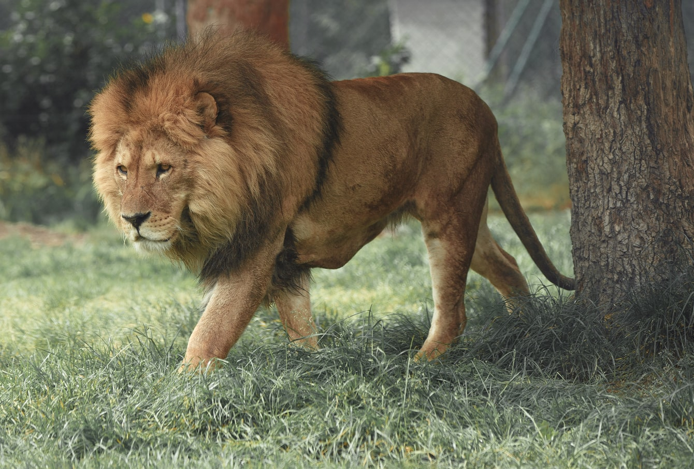

THE ANIMALS OF WILSON ZOO
Here you'll find some of the many animals that call our zoo home!
BECKY THE LION
ABOUT ME
Name: Becky
Age: 3
Gender: Female
Loves: Steak
FUN FACTS
- Lions are the only cats that live in groups.
- A group, or pride, can be up to 30 lions, depending on how much food and water is available.
- Female lions are the main hunters. While they’re out looking for food, the males guard the pride’s territory and their young.
- A lion’s roar can be heard up to eight kilometres away.
- Lions scent mark their territory, using their wee, to create a border.
ABOUT US
We can even use leaves to scoop up water and drink it. Monkeys are like humans in many ways. Monkeys have a brain that is very large for their size and it is part of the reason why they are so intelligent.
ABOUT US
Lions are the only cats that live in groups. A group, or pride, can be up to 30 lions, depending on how much food and water is available. Female lions are the main hunters. A lion's roar can be heard up to eight kilometres away.
ABOUT US
Birds have feathers, wings, lay eggs and are warm blooded. There are around 10000 different species of birds worldwide. The Ostrich is the largest bird in the world. It also lays the largest eggs and has the fastest maximum running speed at 97 kph.

ABOUT US
At an average height of around 5m (16-18ft), the giraffe is the tallest land animal in the world. Characterized by its long legs, long neck, and distinctive spotted pattern, many people first believed the giraffe was a cross between a leopard and a camel.
ABOUT US
So why do zebras have stripes? Well, scientists aren’t entirely sure. Their stripes perhaps serve to dazzle and confuse predators and biting insects, or to control the animal’s body heat.

ABOUT US
As well as being the largest land mammal on earth, elephants are a keystone species and play an important role in the environment where they live. However, having roamed the wild for 15 million years.